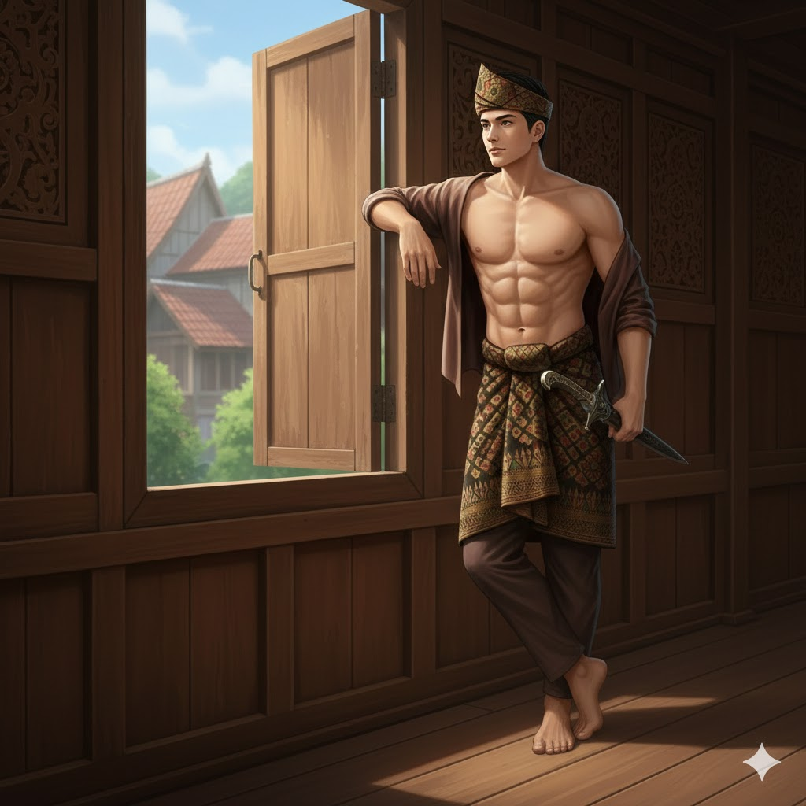
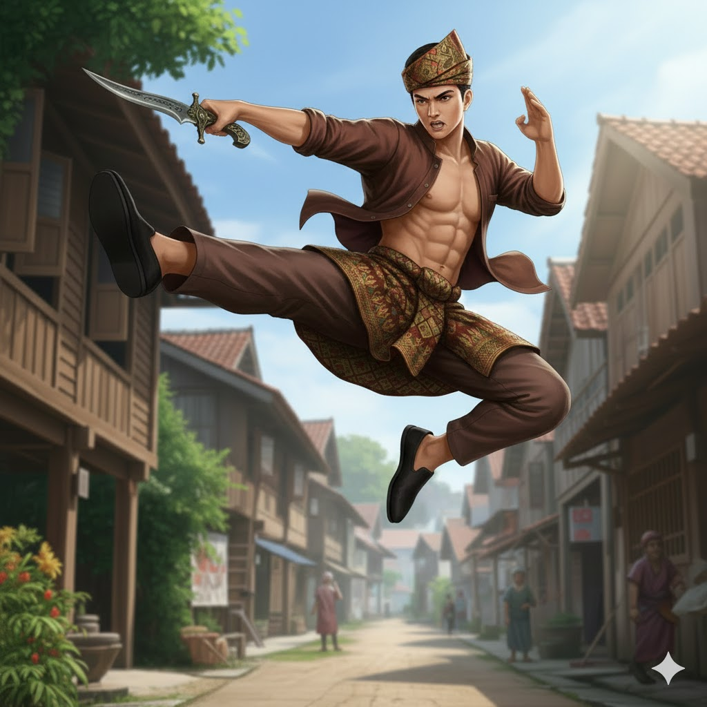
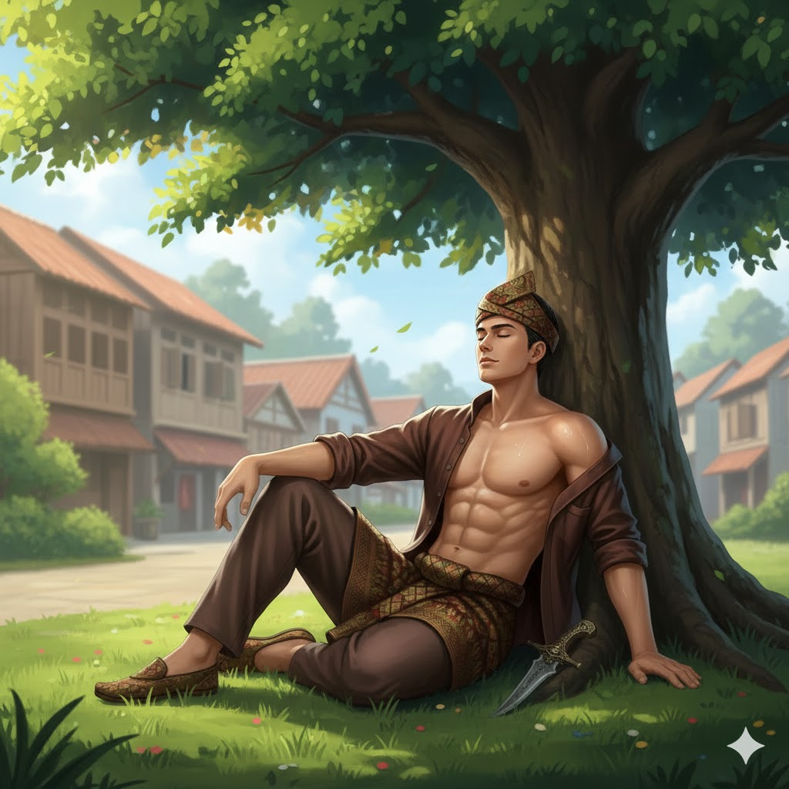
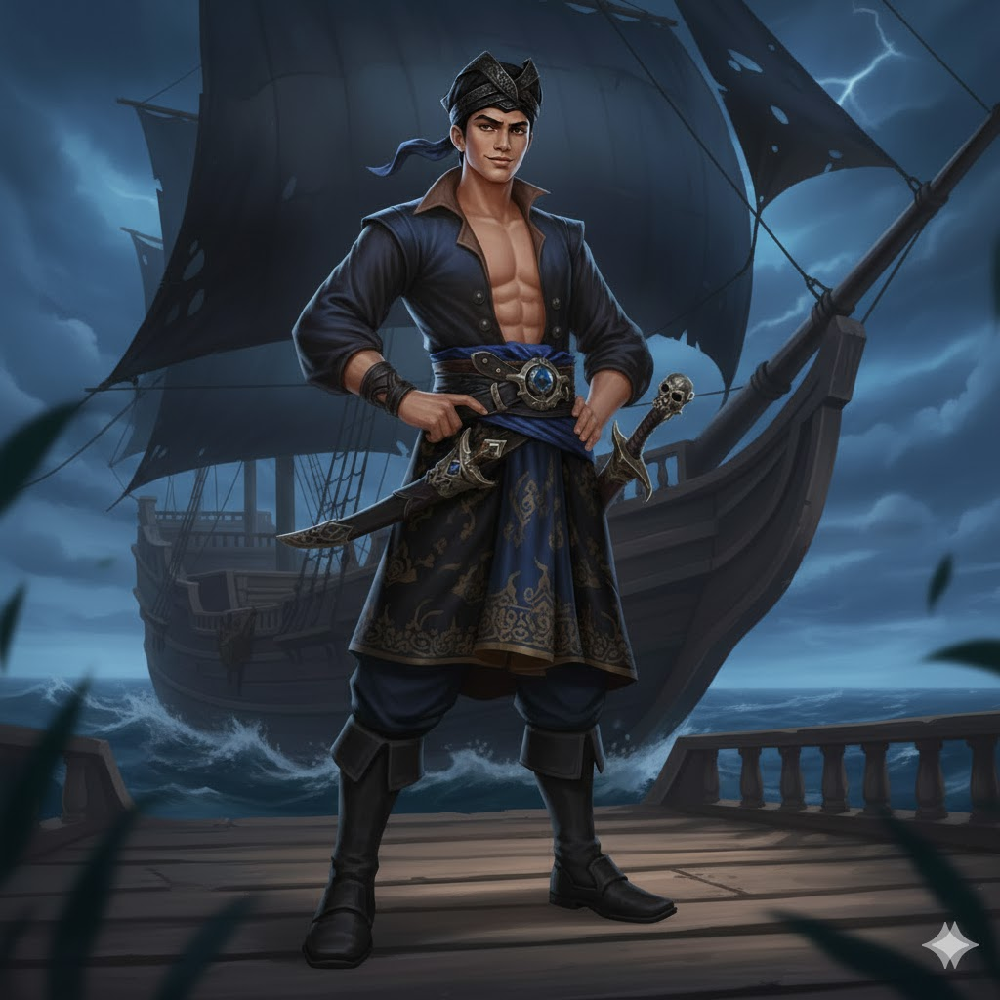

SKIN
HANG TUAH



HANG TUAH

LANUN HANG TUAH
STATISTIK & STATUS NYAWA DAN TENAGA
- Serangan 7
- Penguasaan 7
- Kesukaran 6
- Kekebalan 8
- HP = 2800 +200
- Mana = --- +--
BIODATA
- Nama Pahlawan : HANG TUAH
- Nama Sebenar : Tuah
- Gelaran : PENDEKAR SENI SILAT MELAKA
- Umur : 20 Tahun
- Number Pahlawan : 006
- Jenis Pahlawan :
 PENDEKAR
PENDEKAR - Makhluk : Manusia
- Bangsa : Melayu
- Negeri Asal : Bandar Hilir, Melaka
- Pekerjaan : Pendekar Silat
- Tinggi : 185 cm
- Berat : 76 Kg
SKILL
-
PASIF: WASPADA SILAT
- (True Damage)
- Setiap kali Hang Tuah menyerang musuh, ada peluang 20% untuk mengenakan True Damage sebanyak 5% dari HP maksimum musuh.Efek tambahan:
- Jika serangan pasif ini diaktifkan, damage akan mengabaikan shield musuh.
-
SKILL 1: LANGKAH SILAT
- (CC / Stun / DPS - Fizikal)
- Level: 1-4
- Hang Tuah menyerang satu musuh secara langsung dan membuka seni silatnya, menyerang secara berturut-turut dalam tempoh 2.5 saat.
- Sepanjang seni silat ini berlangsung, musuh akan dalam keadaan Stun dan menerima damage setiap 0.5s.
- Damage: 120/160/200/240 + 100% Total Physical Attack setiap serangan.
- Cooldown: 8s/7s/6s/5s
- Radius: 3 unit (serangan ke satu sasaran).
-
SKILL 2: LONTARAN TAMING SARI
- (Burst Damage / True Damage - Fizikal)
- Level: 1-4
- Hang Tuah melemparkan keris Taming Sari dalam garis lurus sejauh 7 unit, menyebabkan damage kepada semua musuh dalam laluannya.
- Keris akan kekal di lokasi terakhir dan perlu diambil kembali untuk mengelakkan cooldown.
- Jika Tuah tidak mengambil kembali keris dalam 3 saat, skill ini akan memasuki cooldown penuh.
- Damage: 200/240/280/320 + 120% Total Physical Attack
- Cooldown: 10s (jika tidak mengambil keris)
- Radius: Garis lurus sejauh 7 unit
-
SKILL 3: FOCUS SILAT
- (Buff / DPS - Fizikal)
- Level: 1-4
- Hang Tuah meningkatkan kekuatan dan stamina dirinya selama 5 saat.
- HP Bertambah: +500/700/900/1100 HP sepanjang tempoh ini.
- Attack Speed meningkat: +30% selama 5 saat.
- Damage Meningkat: +15% Damage Fizikal.
- Cooldown: 12s